I sit where the customer, the business and the technology meet. Most recently I ran loyalty and personalization products at RaceTrac, and now I work on customer data at Delta.
Led the end-to-end implementation of Braze across RaceTrac's app and web, pulling a fragmented communications setup into one platform for targeted, cross-channel journeys.
How might we centralize customer engagement while giving Marketing better targeting, more flexibility, and less dependency on development?
Customer communications were spread across disconnected tools, which limited segmentation and kept Marketing dependent on development for changes.
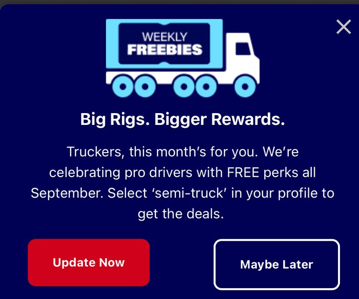
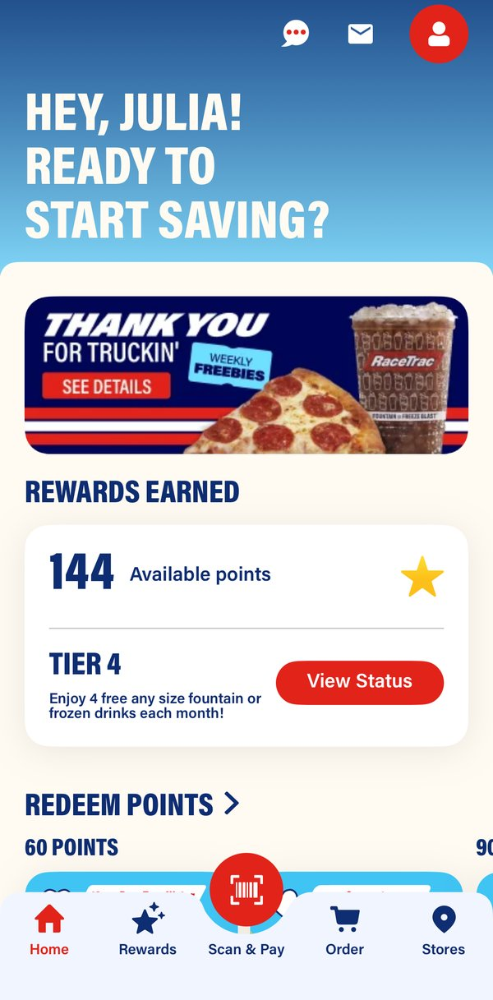
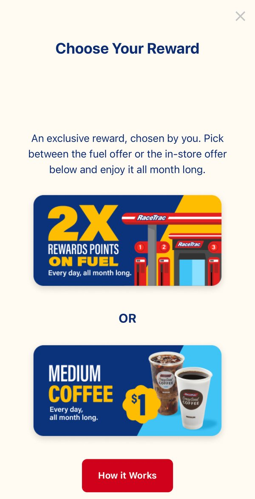
Led RaceTrac's first-ever loyalty tier reset and delivered a status tracker that helped customers understand the new earning structure and see their progress toward the next tier.
How might we introduce a major loyalty program change clearly while keeping customers engaged and motivated to earn their next status?
The program's first tier expiration meant customers would see their status change for the first time. Without a clear explanation, that change could feel like a loss.
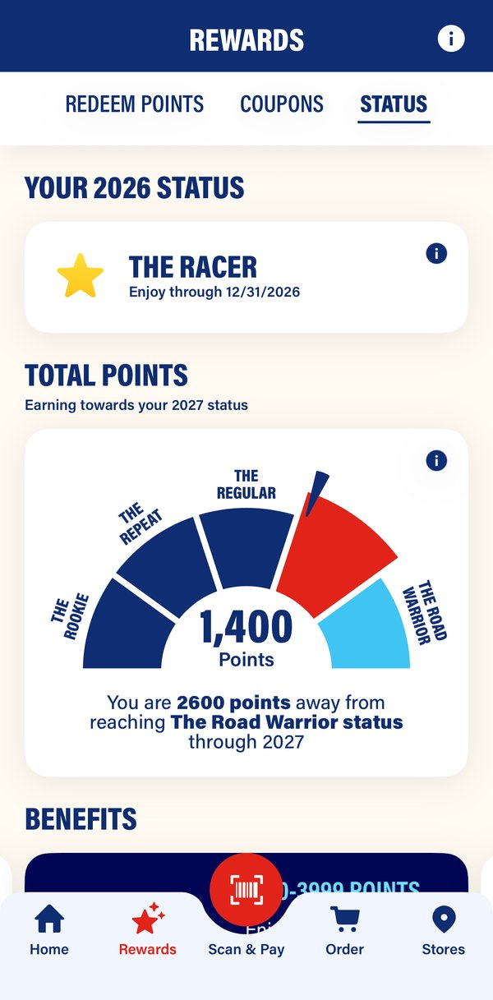
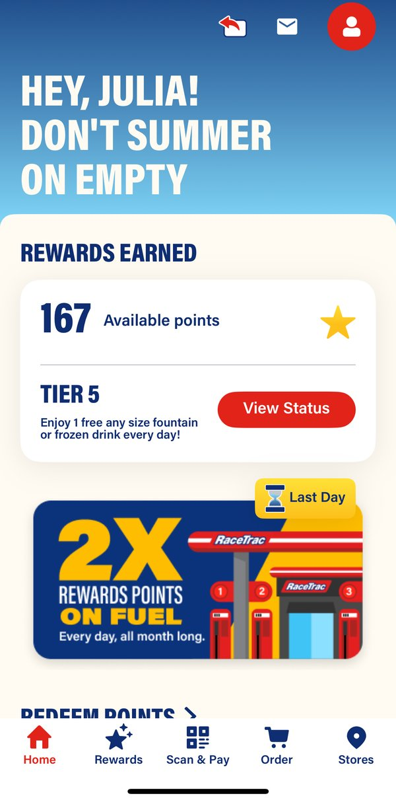
Implemented in-app and web identity verification for 6 community groups: military, teachers, students, nurses, medical professionals, and first responders.
How might we reward community groups without asking store teams to check badges at the register?
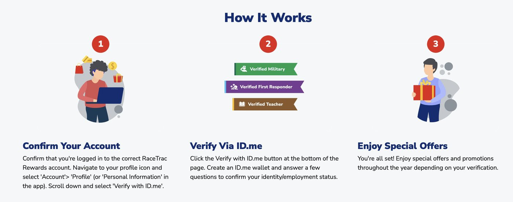
Community discounts depended on manual badge checks in store, which added work for store teams and gave Marketing no way to reach these groups directly.
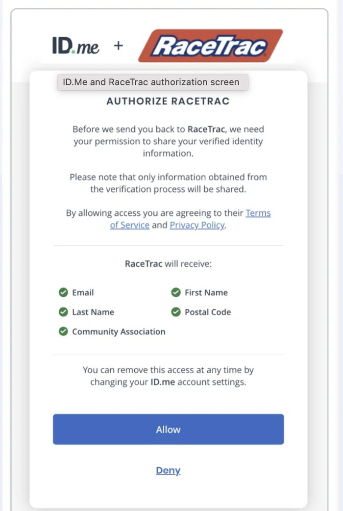
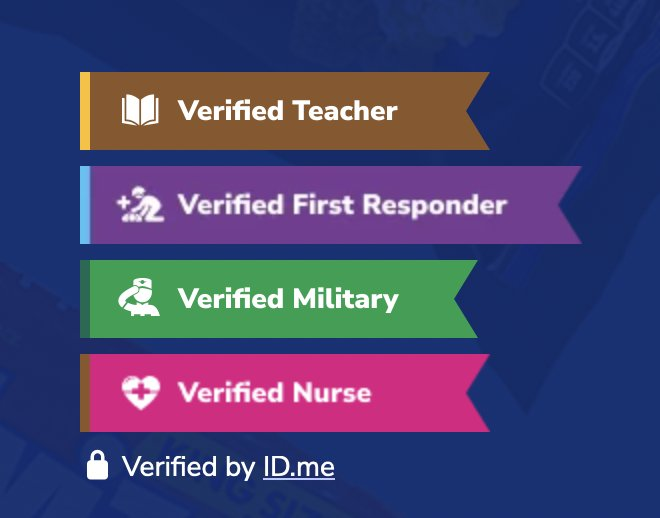
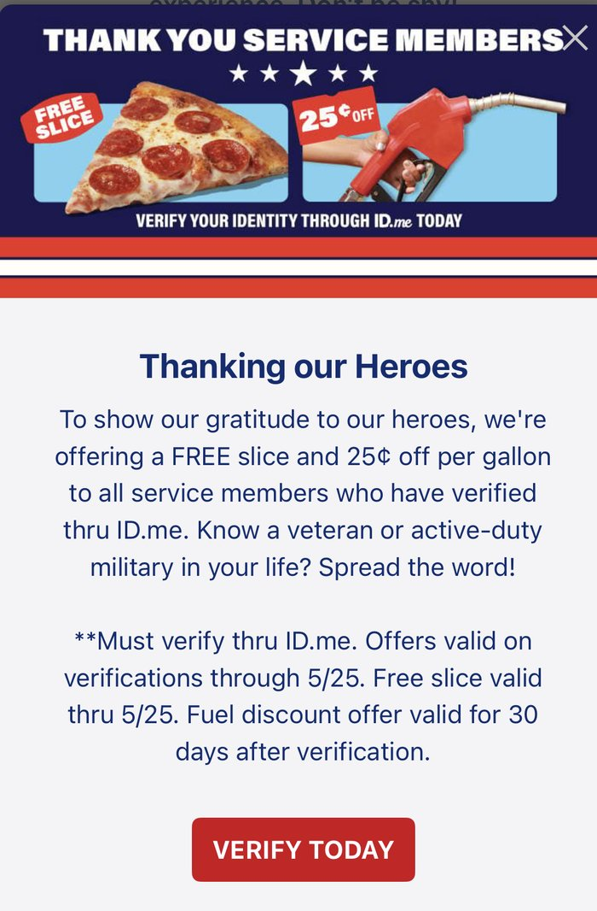
Overhauled the loyalty redemption and personalization flows after the mobile app rebuild.
How might we make earning and redeeming feel simple enough that customers keep coming back?
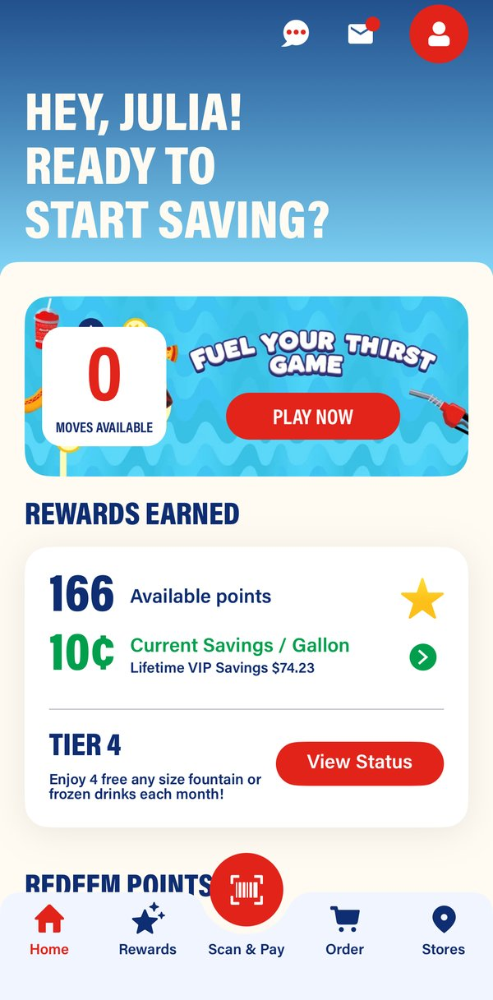
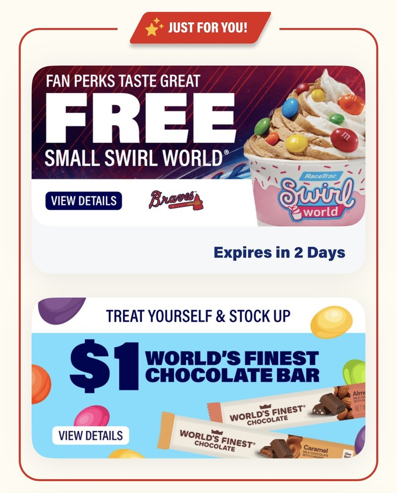
Maintained RaceTrac's B2C website. Over my time there, the site went from mostly fixed pages to flexible sections that the business could update on its own, like promo heroes, alert banners and menu modules.
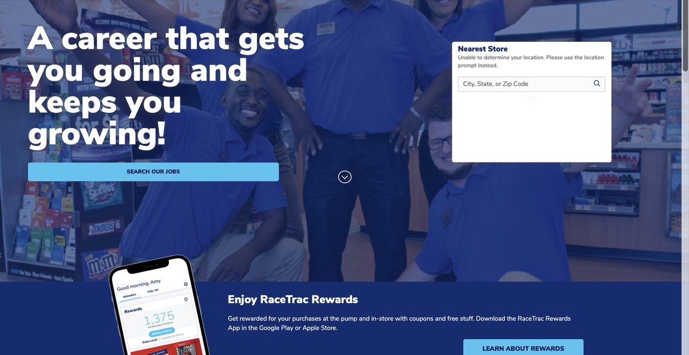
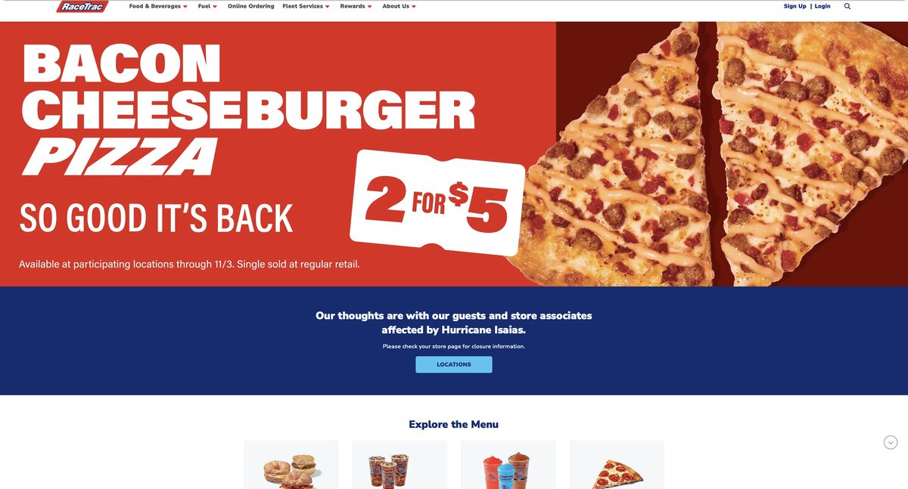
Launched a customer-facing chatbot that gives guests one place for quick answers, FAQs, and feedback.
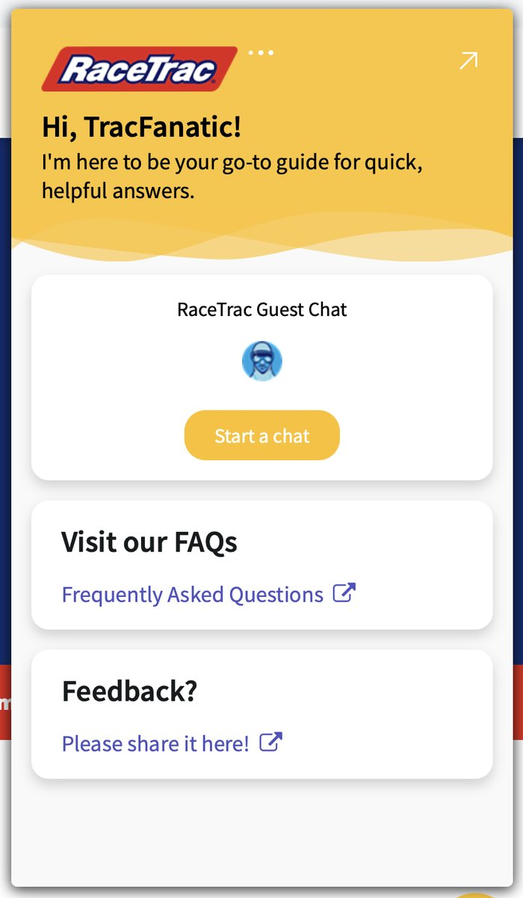
What are we trying to accomplish, what problem is worth solving, and how will we define success?
Who are we solving for, what do they need, and where is the friction?
What can we build, what integrations are required, and which constraints matter?
Customer Data and Journey Orchestration team, working on Adobe Experience Platform (Real-Time CDP, Journey Optimizer, Customer Journey Analytics).
Owned the personalization workstream across loyalty, mobile app and web. Led three concurrent scrum teams (app, web, UI/UX) of about 19 developers and designers. Delivered the Braze implementation, the first loyalty tier reset, ID.me community verification, and a customer-facing chatbot.
Supported product owners with backlog management and user stories, partnered with IT on product backlogs, and ran UX testing across the guest journey.
I started in digital marketing, moved into product, and now work on the customer data underneath personalization. The thread is the same: figure out what the business needs, understand the customer, and find a way to build it that the technology can support.
I'm based in Atlanta. My background in marketing and industrial and graphic design shows up in how I work with UX and how I think about the customer side of every requirement.
Connect on LinkedIn05 / Contact